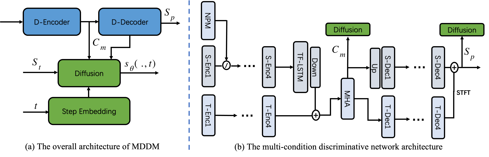

MDDM: A MULTI-CONDITION DISCRIMINATIVE ENHANCED DIFFUSION-BASED MODEL FOR SPEECH ENHANCEMENT
Nan Xu 📮,1
1Alibaba Digital Media & Entertainment Group
📮Corresponding author
Abstract
With the development of deep learning, speech enhancement has been greatly optimized in terms of speech perception and intelligibility. Previous approaches typically focus on discriminative supervised learning or generative modeling, which tends to introduce speech distortions or high computational cost. In this paper, we propose the MDDM, a Multi-condition Discriminative enhanced Diffusion-based Model. Specifically, MDDM feeds the short-time Fourier transform (STFT) and time, as well as noise domains into a discriminative prediction network, generating the impressive spectrogram result. Then, the discriminative output can be converted to clean speech by several reverse diffusion steps. Due to the intersection of the distributions of discriminative output and target, diffusion model enables to use smaller steps without significant performance loss, thus greatly lifting the computational cost. Experiments on a public dataset and a real-world dataset validate the effectiveness of the proposed method, either on subjective or objective metric.
Highlights

Figure 1: The overall architecture of MDDM and multi-condition discriminative network. In figure (a), two D-* are encoder and decoder of discriminative network and output spectrogram is $ S_p $. $ S_t $ is the sampled spectrogram at time-step $ t $. The intermediate multi-view feature $ C_m $ and output $ S_p $ are the conditions of diffusion model. In figure (b), S-* and T-* means frequency and time domains, respectively. NPM is the noise perception module and $ \oslash $ means the modulation mode. Note that the skip connections are not drawn.
Speech Demos
✅ We provide some speech demos.
Samples
↔️ Scroll horizontally to view the full table.
| ID | Original | Hdemucs | MDDM |
|---|---|---|---|
| 1 | |||
| 2 | |||
| 3 | |||
| 4 | |||
| 5 | |||
| 6 | |||
| 7 |